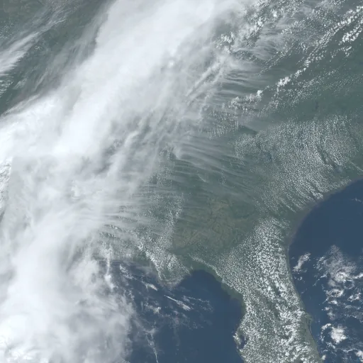

Benchmark / Lossless / goes-abi-16 / goes-abi-16-13
goes-abi-16-13
southeast-us-front · 2023-04-21 · sample details

Metadata
| id | goes-abi-16-13 |
|---|---|
| source | NOAA/GOES/16/MCMIPF (GOES-16 ABI L2 Cloud and Moisture Imagery, full disk) |
| asset | NOAA/GOES/16/MCMIPF/2023111180020300000 |
| crs |
|
| transform |
|
| datetime_start | 2023-04-21T18:00:20.300Z |
| datetime_end | 2023-04-21T18:00:20.300Z |
| bands | CMI_C01 to CMI_C16, 16 planes |
| shape | 16x512x512 |
| dtype | uint16 |
| unit | reflectance factor (C01-C06); K (C07-C16) |
| scale |
|
| offset |
|
| input_sha256 | 3cd52b7a38859657c6446654c796f4e0b873a46c1d1e9982043e6c7492c27814 |
| site | southeast-us-front |
| regime | frontal |
| lon | -85.0 |
| lat | 33.0 |
| grid_column | 2007 |
| grid_row | 4123 |
| sun_elevation | 68.28 |